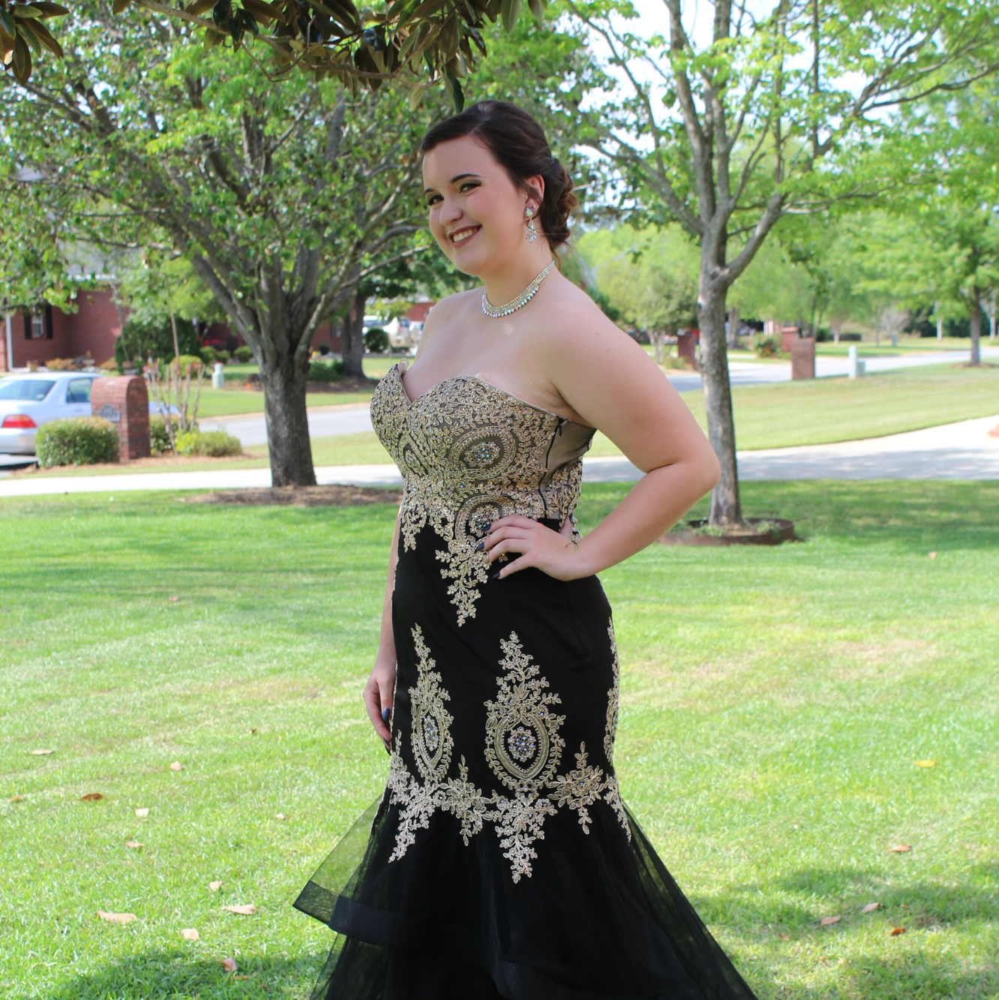
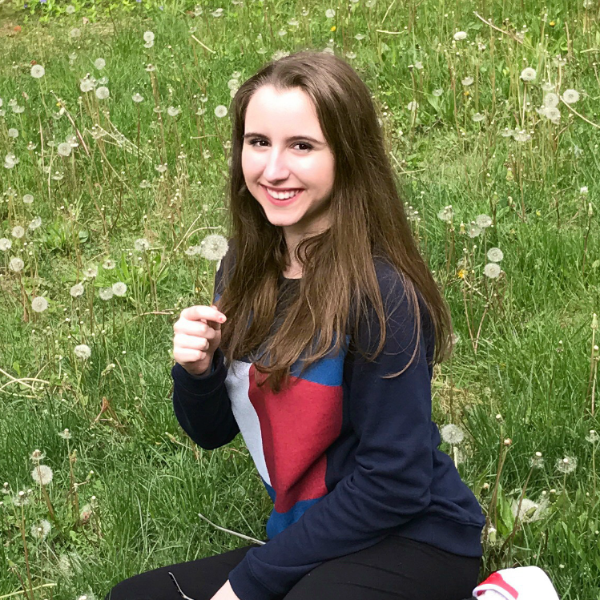
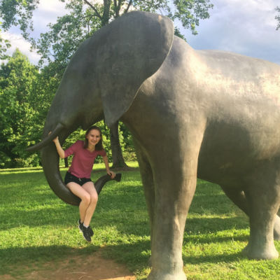

Alexis Strawn
My name is Alexis Strawn and I live in Warner Robins, Georgia, about 2 hours south of Atlanta. I’ve lived in Georgia my whole life and am hoping to be able to go to college somewhere where it’s not so unbearably humid all the time! My hobbies include playing the saxophone in my high school’s concert and marching band, teaching myself clarinet and guitar, creative writing, Netflix, hanging out with friends, stressing over school, and sleeping. I also enjoy discussing politics, cooking and baking when I find the time, and volunteering with a domestic violence prevention program. I’m very excited to be able to write for Gen Z and hope you all enjoy my work!


- 
- 